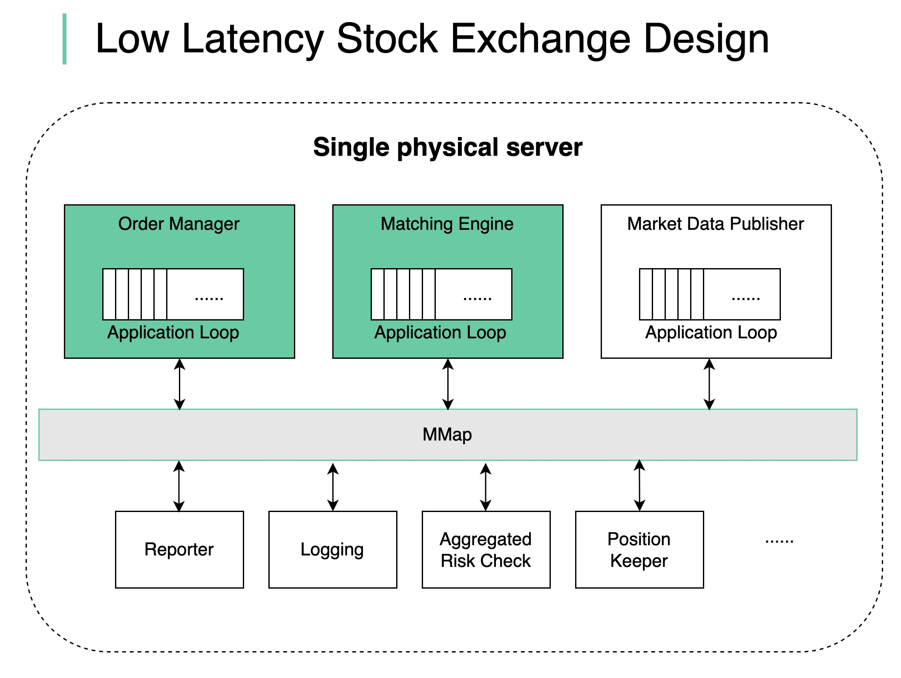

How does a modern stock exchange achieve microsecond latency? The principal is:
Do less on the critical path
Fewer tasks on the critical path
Less time on each task
Fewer network hops
Less disk usage
For the stock exchange, the critical path is:
start: an order comes into the order manager
mandatory risk checks
the order gets matched and the execution is sent back
end: the execution comes out of the order manager
Other non-critical tasks should be removed from the critical path.
We put together a design as shown in the diagram:
deploy all the components in a single giant server (no containers)
use shared memory as an event bus to communicate among the components, no hard disk
key components like Order Manager and Matching Engine are single-threaded on the critical path, and each pinned to a CPU so that there is no context switch and no locks
the single-threaded application loop executes tasks one by one in sequence
other components listen on the event bus and react accordingly